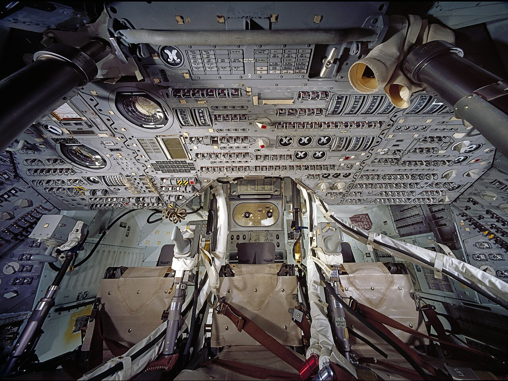
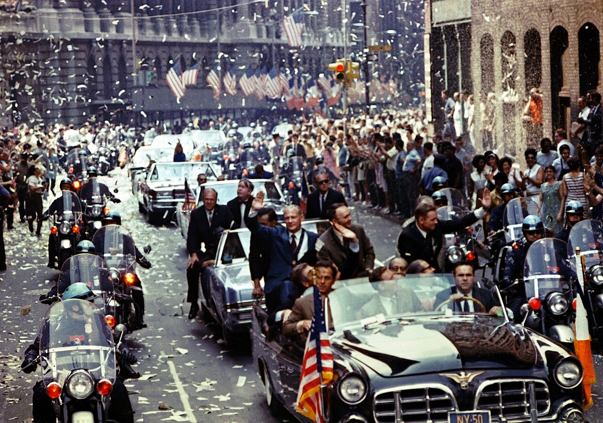
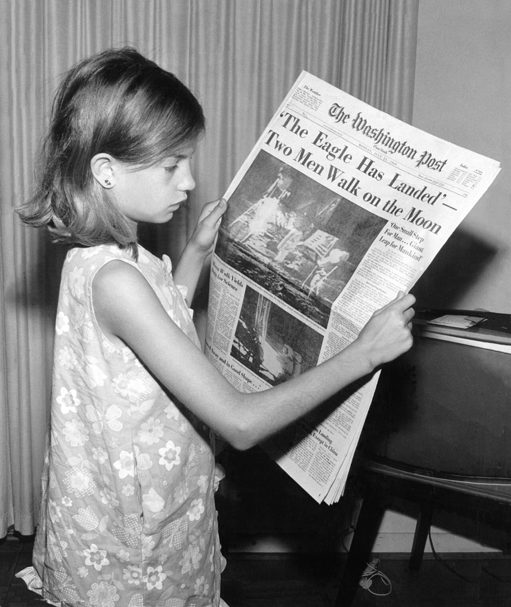

Apollo 11
Three men went to the Moon together. Two of them landed. The third stayed in orbit above them, and on every circuit he passed behind the Moon and spent forty-eight minutes with no radio, no Earth and no word of what was happening below.
Buzz Aldrin

Apollo 11 was the fifth crewed flight of the Apollo program and the first to land — Armstrong and Aldrin on the surface for 21½ hours, Collins in orbit above them, 21.55 kg of the Moon in two boxes on the way home.
Any row below opens where it stands.
The mission was crewed by Commander Neil Armstrong, Command Module Pilot Michael Collins, and Lunar Module Pilot Edwin "Buzz" Aldrin, all of whom were on their second and final spaceflight.
Launched atop a Saturn V rocket from Kennedy Space Center in Florida on July 16 at 13:32 UTC, the Apollo spacecraft consisted of three parts: the command module (CM), which housed the three astronauts and was the only part to return to Earth; the service module (SM), which provided propulsion, electrical power, oxygen, and water to the command module; and the Lunar Module (LM), which had two stages—a descent stage with a large engine and fuel tanks for landing on the Moon, and a lighter ascent stage containing a cabin for two astronauts and a small engine to return them to lunar orbit.
After a three-day transit, Armstrong and Aldrin descended to the surface aboard the LM Eagle, landing in the Sea of Tranquility (Mare Tranquillitatis) on July 20 at 20:17 UTC while Collins remained in lunar orbit aboard the CM Columbia. Armstrong became the first human to walk on the Moon approximately six hours after landing, followed by Aldrin nineteen minutes later. Together they spent around two and a half hours walking on the surface, planting an American flag, speaking with President Richard Nixon who was in the White House, deploying scientific instruments, and collecting 21.5 kg (47.5 lb) of lunar material. After more than 21 hours on the surface, they rejoined Collins in lunar orbit, and the crew returned safely to Earth on July 24, splashing down in the Pacific Ocean.
Apollo 11 was the culmination of the Space Race, a geopolitical competition between the United States and the Soviet Union rooted in Cold War rivalry. It fulfilled a national goal set by President John F. Kennedy in May 1961, who had challenged the United States to land a man on the Moon and return him safely before the end of the decade. The program overcame a severe setback with the fatal Apollo 1 launchpad fire in January 1967 and drew on technologies developed through the preceding Mercury and Gemini programs. The Soviet Union, despite early leads in spaceflight, was unable to match the Saturn V rocket, and its uncrewed lunar probe Luna 15 crashed on the Moon on July 21, while Neil Armstrong and Buzz Aldrin were still on the lunar surface.
Armstrong's moonwalk was broadcast live to an estimated 600 million viewers, roughly one-fifth of the world's population, making it among the most-watched television events in history. Lunar samples returned by the mission led to the identification of three previously unrecognized minerals, and scientific instruments deployed on the surface continued returning data for years afterwards. The crew were honoured with ticker-tape parades, a world goodwill tour, and the Presidential Medal of Freedom. The command module Columbia is preserved at the National Air and Space Museum in Washington, D.C., while the descent stage of Eagle remains on the lunar surface.
In July 1962 NASA settled the shape of the flight. Not one craft to the surface and back: two — a command module that would stay in orbit, and a lunar module that would go down and come up again. To work at all, the mission had to come apart.
Three days before the launch, on July 13, 1969, the Soviet Union sent Luna 15 to bring lunar soil back first. It reached lunar orbit ahead of Apollo 11.
In the late 1950s and early 1960s, the United States was engaged in the Cold War, a geopolitical rivalry with the Soviet Union. On October 4, 1957, the Soviet Union launched Sputnik 1, the first artificial satellite, surprising the world and fueling fears about Soviet technological and military capabilities. Its success demonstrated that the USSR could potentially deliver nuclear weapons over intercontinental distances, challenging American claims of military, economic, and technological superiority.
This incident sparked the Sputnik crisis and ignited the Space Race, as both superpowers sought to demonstrate superiority in spaceflight. President Dwight D. Eisenhower responded to the challenge posed by Sputnik by creating the National Aeronautics and Space Administration (NASA), and initiating Project Mercury, which aimed to place a man into Earth orbit. The Soviets took the lead on April 12, 1961, when cosmonaut Yuri Gagarin became the first person in space and the first to orbit the Earth. Nearly a month later, on May 5, 1961, Alan Shepard became the first American in space; his 15-minute flight was suborbital, not a full orbit.
Because the Soviet Union had launch vehicles with higher lift capacity, President John F. Kennedy, Eisenhower's successor, chose a challenge that exceeded the capabilities of the existing generation of rockets, so that both countries would be starting from an equal position. A crewed mission to the Moon would serve this purpose. On May 25, 1961, Kennedy addressed the United States Congress on "Urgent National Needs."
In spite of that, the proposed program faced widespread opposition and was dubbed a "moondoggle" by Norbert Wiener, a mathematician at the Massachusetts Institute of Technology. The effort to land a man on the Moon already had a name: Project Apollo. When Kennedy met with Nikita Khrushchev, the Premier of the Soviet Union in June 1961, he proposed making the Moon landing a joint project, but Khrushchev declined the offer. Kennedy again proposed a joint expedition to the Moon in a speech to the United Nations General Assembly on September 20, 1963. The idea of a joint Moon mission was ultimately abandoned after Kennedy's death.
An early and crucial decision was choosing lunar orbit rendezvous over both direct ascent and Earth orbit rendezvous. A space rendezvous is an orbital maneuver in which two spacecraft navigate through space and meet up. In July 1962, NASA head James Webb announced that lunar orbit rendezvous would be used and that the Apollo spacecraft would have three major parts: a command module (CM) with a cabin for the three astronauts, and the only part that returned to Earth; a service module (SM), which supported the command module with propulsion, electrical power, oxygen, and water; and a lunar module (LM) that had two stages—a descent stage for landing on the Moon, and an ascent stage to place the astronauts back into lunar orbit. This design meant the spacecraft could be launched by a single Saturn V rocket that was then under development.
Technologies and techniques required for Apollo were developed by Project Gemini. The Apollo project was enabled by NASA's adoption of new advances in semiconductor device, including metal–oxide–semiconductor field-effect transistors (MOSFETs) in the Interplanetary Monitoring Platform (IMP) and silicon integrated circuit (IC) chips in the Apollo Guidance Computer (AGC).
Project Apollo was abruptly halted by the Apollo 1 fire on January 27, 1967, in which astronauts Gus Grissom, Ed White, and Roger B. Chaffee died, and the subsequent investigation. In October 1968, Apollo 7 evaluated the command module in Earth orbit, and in December Apollo 8 tested it in lunar orbit. In March 1969, Apollo 9 put the lunar module through its paces in Earth orbit, and in May Apollo 10 conducted a "dress rehearsal" in lunar orbit. By July 1969, all was in readiness for Apollo 11 to take the final step onto the Moon.
The Soviet Union appeared to be winning the Space Race, but its early lead was overtaken by the US Gemini program and Soviet failure to develop the N1 launcher, which would have been comparable to the Saturn V. Seeing these failures, the Soviets then attempted to beat the US to return lunar material to the Earth by means of uncrewed probes. On July 13, three days before Apollo 11's launch, the Soviet Union launched Luna 15, which reached lunar orbit before Apollo 11. During descent, a malfunction caused Luna 15 to crash in Mare Crisium about two hours before Armstrong and Aldrin took off from the Moon's surface to return to earth. The Nuffield Radio Astronomy Laboratories radio telescope in England recorded transmissions from Luna 15 during its descent, and these were released in July 2009 for the 40th anniversary of Apollo 11.
From Kennedy's address at Rice University, Houston, 12 September 1962: "There is no strife, no prejudice, no national conflict in outer space as yet. Its hazards are hostile to us all. Its conquest deserves the best of all mankind, and its opportunity for peaceful cooperation may never come again. But why, some say, the Moon? Why choose this as our goal? And they may well ask, why climb the highest mountain? Why, 35 years ago, fly the Atlantic? Why does Rice play Texas? … We choose to go to the Moon! We choose to go to the Moon … We choose to go to the Moon in this decade and do the other things, not because they are easy, but because they are hard; because that goal will serve to organize and measure the best of our energies and skills, because that challenge is one that we are willing to accept, one we are unwilling to postpone, and one we intend to win, and the others, too."
From the same address to Congress, 25 May 1961: "No single space project in this period will be more impressive to mankind, or more important for the long-range exploration of space; and none will be so difficult or expensive to accomplish. We propose to accelerate the development of the appropriate lunar space craft. We propose to develop alternate liquid and solid fuel boosters, much larger than any now being developed, until certain which is superior. We propose additional funds for other engine development and for unmanned explorations—explorations which are particularly important for one purpose which this nation will never overlook: the survival of the man who first makes this daring flight. But in a very real sense, it will not be one man going to the Moon—if we make this judgment affirmatively, it will be an entire nation. For all of us must work to put him there."
I believe that this nation should commit itself to achieving the goal, before this decade is out, of landing a man on the Moon and returning him safely to the Earth.
John F. Kennedy · address to Congress on Urgent National Needs · 25 May 1961

- Prime crew
- Neil Armstrong Commander
- Michael Collins Command Module Pilot
- Edwin "Buzz" Aldrin Jr. Lunar Module Pilot
- All three on their second and last spaceflight.
- Backup crew
- Jim Lovell Commander
- William Anders Command Module Pilot
- Fred Haise Lunar Module Pilot
- Ken Mattingly moved into parallel training as backup CMP in case of delay past July.
- Support crew & CAPCOM
- Mattingly · Evans · Pogue support crew
- Anders · Evans · Haise · Lovell · Mattingly capsule communicators
- Duke · Garriott · Lind · McCandless II · Schmitt capsule communicators
The initial crew assignment of Commander Neil Armstrong, Command Module Pilot Jim Lovell, and Lunar Module Pilot Buzz Aldrin on the backup crew for Apollo 9 was officially announced on November 20, 1967. Due to design and manufacturing delays in the LM, Apollo 8 and Apollo 9 swapped prime and backup crews, and Armstrong's crew became the backup for Apollo 8. Based on the normal crew rotation scheme, Armstrong was then expected to command Apollo 11. There would be one change: Michael Collins, the CMP on the Apollo 8 crew, began experiencing trouble with his legs. Doctors diagnosed a bony growth between his fifth and sixth vertebrae, requiring surgery. Lovell took his place on the Apollo 8 crew, and when Collins recovered he joined Armstrong's crew as CMP.
Deke Slayton gave Armstrong the option to replace Aldrin with Lovell, since some thought Aldrin was difficult to work with. Armstrong had no issues working with Aldrin but thought it over for a day before declining. He thought Lovell deserved to command his own mission (eventually Apollo 13).
The Apollo 11 prime crew had none of the close cheerful camaraderie characterized by that of Apollo 12. Instead, they forged an amiable working relationship. Armstrong in particular was notoriously aloof, but Collins, who considered himself a loner, confessed to rebuffing Aldrin's attempts to create a more personal relationship. Aldrin and Collins described the crew as "amiable strangers". Armstrong did not agree with the assessment, and said "all the crews I was on worked very well together."
The capsule communicator (CAPCOM) was an astronaut stationed at the Mission Control Center in Houston, Texas, and was typically the only person permitted to communicate directly with the flight crew. This practice ensured that messages came from someone best able to understand the situation in the spacecraft and to relay guidance from flight controllers as clearly as possible.

- Science
- Farouk El-Baz Geologist; studied geology of the Moon, identified landing locations, trained pilots
- Gene Shoemaker Geologist who trained astronauts in field geology
- Millicent Goldschmidt Microbiologist; aseptic lunar material collection techniques
- Computing
- Margaret Hamilton Onboard flight computer software engineer
- Eldon C. Hall Apollo Guidance Computer hardware designer
- Jack Garman Computer engineer and technician
- Hardware & ground
- Kurt Debus Supervised construction of launch pads and infrastructure
- Eleanor Foraker Tailor who designed space suits
- Milton E. Harr Geotechnical engineer; designed the LM footpads
- John Houbolt Route planner
- Bill Tindall Coordinated mission techniques
- Jamye Flowers Secretary for astronauts

The Apollo 11 mission emblem was designed by Collins, who wanted a symbol for "peaceful lunar landing by the United States". At Lovell's suggestion, he chose the bald eagle, the national bird of the United States, as the symbol. Tom Wilson, a simulator instructor, suggested an olive branch in its beak to represent their peaceful mission. Collins added a lunar background with the Earth in the distance. The sunlight in the image was coming from the wrong direction; the shadow should have been in the lower part of the Earth instead of the left.
Aldrin, Armstrong and Collins decided the Eagle and the Moon would be in their natural colors, and decided on a blue and gold border. Armstrong was concerned that "eleven" would not be understood by non-English speakers, so they went with "Apollo 11", and they decided not to put their names on the patch, so it would "be representative of everyone who had worked toward a lunar landing".
An illustrator at the Manned Spacecraft Center (MSC) did the artwork, which was then sent off to NASA officials for approval. The design was rejected. Bob Gilruth, the director of the MSC felt the talons of the eagle looked "too warlike". After some discussion, the olive branch was moved to the talons. When the Eisenhower dollar coin was released in 1971, the patch design provided the eagle for its reverse side. The design was also used for the smaller Susan B. Anthony dollar unveiled in 1979.
After the crew of Apollo 10 named their spacecraft Charlie Brown and Snoopy, assistant manager for public affairs Julian Scheer wrote to George Low, the Manager of the Apollo Spacecraft Program Office at the MSC, to suggest the Apollo 11 crew be less flippant in naming their craft. The name Snowcone was used for the CM and Haystack was used for the LM in both internal and external communications during early mission planning.
The LM was named Eagle after the motif which was featured prominently on the mission insignia. At Scheer's suggestion, the CM was named Columbia after Columbiad, the giant cannon that launched a spacecraft (also from Florida) in Jules Verne's 1865 novel From the Earth to the Moon. It also referred to Columbia, a historical name of the United States. In Collins' 1976 book, he said Columbia was in reference to Christopher Columbus.
The astronauts had personal preference kits (PPKs), small bags containing personal items of significance they wanted to take with them on the mission. Five 0.5-pound (0.23 kg) PPKs were carried on Apollo 11: three (one for each astronaut) were stowed on Columbia before launch, and two on Eagle.
Neil Armstrong's LM PPK contained a piece of wood from the Wright brothers' 1903 Wright Flyer's left propeller and a piece of fabric from its wing, along with a diamond-studded astronaut pin originally given to Slayton by the widows of the Apollo 1 crew. This pin had been intended to be flown on that mission and given to Slayton afterwards, but following the disastrous launch pad fire and subsequent funerals, the widows gave the pin to Slayton. Armstrong took it with him on Apollo 11.
NASA's Apollo Site Selection Board announced five potential landing sites on February 8, 1968. These were the result of two years' worth of studies based on high-resolution photography of the lunar surface by the five uncrewed probes of the Lunar Orbiter program and information about surface conditions provided by the Surveyor program. The best Earth-bound telescopes could not resolve features with the resolution Project Apollo required. The landing site had to be close to the lunar equator to minimize the amount of propellant required, clear of obstacles to minimize maneuvering, and flat to simplify the task of the landing radar. Scientific value was not a consideration.
Areas that appeared promising on photographs taken on Earth were often found to be totally unacceptable. The original requirement that the site be free of craters had to be relaxed, as no such site was found. Five sites were considered: Sites 1 and 2 were in the Sea of Tranquility (Mare Tranquillitatis); Site 3 was in the Central Bay (Sinus Medii); and Sites 4 and 5 were in the Ocean of Storms (Oceanus Procellarum). The final site selection was based on seven criteria:
- The site needed to be smooth, with relatively few craters;
- with approach paths free of large hills, tall cliffs or deep craters that might confuse the landing radar and cause it to issue incorrect readings;
- reachable with a minimum amount of propellant;
- allowing for delays in the launch countdown;
- providing the Apollo spacecraft with a free-return trajectory, one that would allow it to coast around the Moon and safely return to Earth without requiring any engine firings should a problem arise on the way to the Moon;
- with good visibility during the landing approach, meaning the Sun would be between 7 and 20 degrees behind the LM; and
- a general slope of less than two degrees in the landing area.
The requirement for the Sun angle was particularly restrictive, limiting the launch date to one day per month. A landing just after dawn was chosen to limit the temperature extremes the astronauts would experience. The Apollo Site Selection Board selected Site 2, with Sites 3 and 5 as backups in the event of the launch being delayed. In May 1969, Apollo 10's lunar module flew to within 15 kilometers (9.3 mi) of Site 2, and reported it was acceptable.
Asked at the crew's first press conference which of them would step onto the Moon first, Slayton said it had not been decided. It was announced on April 14, 1969. Four accounts survive of how it was reached, and they do not agree.
01. For decades, Aldrin believed the final decision was largely driven by the Lunar Module's hatch location. The crew tried a simulation in which Aldrin left the spacecraft first, but he damaged the simulator while attempting to egress.
02. Aldrin heard that Armstrong would be the first because Armstrong was a civilian, which made Aldrin livid. He attempted to persuade other Lunar Module pilots he should be first, but they responded cynically about what they perceived as a lobbying campaign.
03. Attempting to stem interdepartmental conflict, Slayton told Aldrin that Armstrong would be first since he was the commander. The media accused Armstrong of exercising his commander's prerogative to exit the spacecraft first.
04. Chris Kraft revealed in his 2001 autobiography that a meeting occurred between Gilruth, Slayton, Low, and himself to make sure Aldrin would not be the first to walk on the Moon. They argued the first person should be like Charles Lindbergh, a calm and quiet person.
During the first press conference after the Apollo 11 crew was announced, the first question was, "Which one of you gentlemen will be the first man to step onto the lunar surface?" Slayton told the reporter it had not been decided, and Armstrong added that it was "not based on individual desire". Slayton later told Armstrong the plan was to have him leave the spacecraft first, if he agreed. Armstrong said, "Yes, that's the way to do it."
The parts arrived at Cape Kennedy through the winter, one at a time, and were stacked into a 5,443-tonne machine that left the assembly building at walking pace on 20 May.
The ascent stage of LM-5 Eagle arrived at the Kennedy Space Center on January 8, 1969, followed by the descent stage four days later, and CSM-107 Columbia on January 23. There were several differences between Eagle and Apollo 10's LM-4 Snoopy: Eagle had a VHF radio antenna to facilitate communication with the astronauts during their EVA on the lunar surface; a lighter ascent engine; more thermal protection on the landing gear; and a package of scientific experiments known as the Early Apollo Scientific Experiments Package (EASEP). The only change in the configuration of the command module was the removal of some insulation from the forward hatch.
The S-IVB third stage of Saturn V AS-506 had arrived on January 18, followed by the S-II second stage on February 6, S-IC first stage on February 20, and the Saturn V Instrument Unit on February 27. At 12:30 on May 20, the 5,443-tonne assembly departed the Vehicle Assembly Building atop the crawler-transporter, bound for Launch Pad 39A, part of Launch Complex 39, while Apollo 10 was still on its way to the Moon. A countdown test commenced on June 26, and concluded on July 2. The launch complex was floodlit on the night of July 15, when the crawler-transporter carried the mobile service structure back to its parking area. In the early hours of the morning, the fuel tanks of the S-II and S-IVB stages were filled with liquid hydrogen. Fueling was completed by three hours before launch. Launch operations were partly automated, with 43 programs written in the ATOLL programming language.
They then donned their space suits and began breathing pure oxygen. At 06:30, they headed out to Launch Complex 39. Haise entered Columbia about three hours and ten minutes before launch time. Along with a technician, he helped Armstrong into the left-hand couch at 06:54. Five minutes later, Collins joined him, taking up his position on the right-hand couch. Finally, Aldrin entered, taking the center couch. Haise left around two hours and ten minutes before launch. The closeout crew sealed the hatch, and the cabin was purged and pressurized. The closeout crew then left the launch complex about an hour before launch time.
Dignitaries included the Chief of Staff of the United States Army, General William Westmoreland, four cabinet members, 19 state governors, 40 mayors, 60 ambassadors and 200 congressmen. Vice President Spiro Agnew viewed the launch with former president Lyndon B. Johnson and his wife Lady Bird Johnson. Around 3,500 media representatives were present. About two-thirds were from the United States; the rest came from 55 other countries. The launch was televised live in 33 countries, with an estimated 25 million viewers in the United States alone. Millions more around the world listened to radio broadcasts. President Richard Nixon viewed the launch from his office in the White House with his NASA liaison officer, Apollo astronaut Frank Borman. Lodging near Cape Canaveral was reported as being booked months ahead in advance for the launch by a Florida newspaper.

The trans-lunar injection (TLI) burn took about 5 minutes and 47 seconds and started at 16:16:16 UTC. About 30 minutes later, with Collins in the left seat and at the controls, the transposition, docking, and extraction maneuver was performed. This involved separating Columbia from the spent S-IVB stage, turning around, and docking with Eagle still attached to the stage. After the LM was extracted, the combined spacecraft headed for the Moon, while the rocket stage flew on a trajectory past the Moon. This was done to avoid the third stage colliding with the spacecraft, the Earth, or the Moon. A slingshot effect from passing around the Moon threw it into an orbit around the Sun.
From lunar orbit insertion onward the spacecraft spends forty-eight minutes of every two-hour orbit behind the Moon, unable to hear the Earth or be heard by it. Thirty times.
In the thirty orbits that followed, the crew saw passing views of their landing site in the southern Sea of Tranquility about 12 miles (19 km) southwest of the crater Sabine D. The site was selected in part because it had been characterized as relatively flat and smooth by the automated Ranger 8 and Surveyor 5 landers and the Lunar Orbiter mapping spacecraft, and because it was unlikely to present major landing or EVA challenges. It lay about 25 kilometers (16 mi) southeast of the Surveyor 5 landing site, and 68 kilometers (42 mi) southwest of Ranger 8's crash site.

infobox: Undocking date
ends 96 h 47 m 57 s docked
From this second there are two vehicles, two crews and two sets of information. Each craft photographed the other across the gap that had just opened.
Two vehicles to listen to now, and for forty-eight minutes of every orbit only one of them can be heard.


Twelve minutes, six thousand feet, and one man flying by hand past a boulder field with the fuel call running.
The program alarms indicated "executive overflows", meaning the guidance computer could not complete all its tasks in real-time and had to postpone some of them.
Margaret Hamilton, Director of Apollo Flight Computer Programming at the MIT Charles Stark Draper Laboratory, later recalled: “To blame the computer for the Apollo 11 problems is like blaming the person who spots a fire and calls the fire department. Actually, the computer was programmed to do more than recognize error conditions. A complete set of recovery programs was incorporated into the software. The software's action, in this case, was to eliminate lower priority tasks and re-establish the more important ones. The computer, rather than almost forcing an abort, prevented an abort. If the computer hadn't recognized this problem and taken recovery action, I doubt if Apollo 11 would have been the successful Moon landing it was.”
During the mission, the cause was diagnosed as the rendezvous radar switch being in the wrong position, causing the computer to process data from both the rendezvous and landing radars at the same time. Software engineer Don Eyles concluded in a 2005 Guidance and Control Conference paper that the problem was due to a hardware design bug previously seen during testing of the first uncrewed LM in Apollo 5. Having the rendezvous radar on (so it was warmed up in case of an emergency landing abort) should have been irrelevant to the computer, but an electrical phasing mismatch between two parts of the rendezvous radar system could cause the stationary antenna to appear to the computer as dithering back and forth between two positions, depending upon how the hardware randomly powered up. The extra spurious cycle stealing, as the rendezvous radar updated an involuntary counter, caused the computer alarms.
Eagle was traveling too fast. The problem could have been mascons—concentrations of high mass in a region or regions of the Moon's crust that contains a gravitational anomaly, potentially altering Eagle's trajectory. Flight Director Gene Kranz speculated that it could have resulted from extra air pressure in the docking tunnel, or a result of Eagle's pirouette maneuver.
Armstrong considered landing short of the boulder field so they could collect geological samples from it, but could not since their horizontal velocity was too high. Throughout the descent, Aldrin called out navigation data to Armstrong, who was busy piloting Eagle.

He cleared the crater and found another patch of level ground.
Lunar dust kicked up by the LM's engine began to impair his ability to determine the spacecraft's motion. Some large rocks jutted out of the dust cloud, and Armstrong focused on them during his descent so he could determine the spacecraft's speed.
Armstrong was supposed to immediately shut the engine down, as the engineers suspected the pressure caused by the engine's own exhaust reflecting off the lunar surface could make it explode, but he forgot. Three seconds later, Eagle landed and Armstrong shut the engine down. Aldrin immediately said “Okay, engine stop. ACA—out of detent.” Armstrong acknowledged: “Out of detent. Auto.” Aldrin continued: “Mode control—both auto. Descent engine command override off. Engine arm—off. 413 is in.”
ACA was the Attitude Control Assembly—the LM's control stick. Output went to the LGC to command the reaction control system (RCS) jets to fire. “Out of Detent” meant the stick had moved away from its centered position; it was spring-centered like the turn indicator in a car. Address 413 of the Abort Guidance System (AGS) contained the variable that indicated the LM had landed.
Information available to the crew and mission controllers during the landing showed the LM had enough fuel for another 25 seconds of powered flight before an abort without touchdown would have become unsafe, but post-mission analysis showed that the real figure was probably closer to 50 seconds. Apollo 11 landed with less fuel than most subsequent missions, and the astronauts encountered a premature low fuel warning. This was later found to be the result of the propellant sloshing more than expected, uncovering a fuel sensor. On subsequent missions, extra anti-slosh baffles were added to the tanks to prevent this.
Armstrong's unrehearsed change of call sign from “Eagle” to “Tranquility Base” emphasized to listeners that landing was complete and successful.
Left margin: propellant remaining. It only ever decreases.
Two men are on the ground and cannot leave it for twenty-one hours. The third goes round every two hours, and for forty-eight minutes of each pass hears nothing from either of them.
He then took communion privately. Aldrin chose to refrain from directly mentioning taking communion on the Moon. Aldrin was an elder at the Webster Presbyterian Church, and his communion kit was prepared by the pastor of the church, Dean Woodruff. Webster Presbyterian possesses the chalice used on the Moon and commemorates the event each year on the Sunday closest to July 20.
During training on Earth, everything required had been neatly laid out in advance, but on the Moon the cabin contained a large number of other items as well, such as checklists, food packets, and tools. Six hours and thirty-nine minutes after landing, Armstrong and Aldrin were ready to go outside, and Eagle was depressurized.
In his autobiography he wrote: “this venture has been structured for three men, and I consider my third to be as necessary as either of the other two”. In the 48 minutes of each orbit when he was out of radio contact with the Earth while Columbia passed round the far side of the Moon, the feeling he reported was not fear or loneliness, but rather:
Each time he passed over the suspected site, he tried in vain to find it.
On his first orbits on the back side of the Moon, Collins performed maintenance activities such as dumping excess water produced by the fuel cells and preparing the cabin for Armstrong and Aldrin to return.
If it became too cold, parts of Columbia might freeze.
Mission Control advised him to assume manual control and implement Environmental Control System Malfunction Procedure 17. Instead, Collins flicked the switch on the system from automatic to manual and back to automatic again, and carried on with normal housekeeping chores, while keeping an eye on the temperature. When Columbia came back around to the near side of the Moon again, Collins was able to report that the problem had been resolved. For the next couple of orbits, he described his time on the back side of the Moon as “relaxing”.

Two and a half hours outside, watched by six hundred million people through a camera pointed at a monitor.
Despite some technical and weather difficulties, black and white images of the first lunar EVA were received and broadcast.
Nixon originally had a long speech prepared to read during the phone call, but Frank Borman, who was at the White House as a NASA liaison during Apollo 11, convinced Nixon to keep his words brief.
Nixon: Hello, Neil and Buzz. I'm talking to you by telephone from the Oval Room at the White House. And this certainly has to be the most historic telephone call ever made from the White House. I just can't tell you how proud we all are of what you have done. For every American, this has to be the proudest day of our lives. And for people all over the world, I am sure that they too join with Americans in recognizing what an immense feat this is. Because of what you have done, the heavens have become a part of man's world. And as you talk to us from the Sea of Tranquility, it inspires us to redouble our efforts to bring peace and tranquility to Earth. For one priceless moment in the whole history of man, all the people on this Earth are truly one: one in their pride in what you have done, and one in our prayers that you will return safely to Earth.
Armstrong: Thank you, Mr. President. It's a great honor and privilege for us to be here, representing not only the United States, but men of peace of all nations, and with interest and a curiosity, and men with a vision for the future. It's an honor for us to be able to participate here today.
Nixon: Thank you very much, and I look forward, all of us look forward, to seeing you on the Hornet on Thursday.
As metabolic rates remained generally lower than expected for both astronauts throughout the walk, Mission Control granted the astronauts a 15-minute extension. In a 2010 interview, Armstrong explained that NASA limited the first moonwalk's time and distance because there was no empirical proof of how much cooling water the astronauts' PLSS backpacks would consume to handle their body heat generation while working on the Moon.
Climbing down the nine-rung ladder, Armstrong pulled a D-ring to deploy the modular equipment stowage assembly folded against Eagle's side and activate the TV camera.
When later asked about his quote, Armstrong said he believed he said “for a man”, and subsequent printed versions of the quote included the “a” in square brackets. One explanation for the absence may be that his accent caused him to slur the words “for a” together; another is the intermittent nature of the audio and video links to Earth, partly because of storms near Parkes Observatory. A more recent digital analysis of the tape claims to reveal the “a” may have been spoken but obscured by static. Other analysis points to the claims of static and slurring as “face-saving fabrication”, and that Armstrong himself later admitted to misspeaking the line.
He then folded the bag and tucked it into a pocket on his right thigh. Twelve minutes after the sample was collected, he removed the TV camera from the MESA and made a panoramic sweep, then mounted it on a tripod. The TV camera cable remained partly coiled and presented a tripping hazard throughout the EVA. Still photography was accomplished with a Hasselblad camera that could be operated hand-held or mounted on Armstrong's Apollo space suit.
Aldrin joined him on the surface and tested methods for moving around, including two-footed kangaroo hops. The PLSS backpack created a tendency to tip backward, but neither astronaut had serious problems maintaining balance. Loping became the preferred method of movement. The astronauts reported that they needed to plan their movements six or seven steps ahead. The fine soil was quite slippery. Aldrin remarked that moving from sunlight into Eagle's shadow produced no temperature change inside the suit, but the helmet was warmer in sunlight, so he felt cooler in shadow. The MESA failed to provide a stable work platform and was in shadow, slowing work somewhat. As they worked, the moonwalkers kicked up gray dust, which soiled the outer part of their suits.
Aldrin remembered, “Of all the jobs I had to do on the Moon the one I wanted to go the smoothest was the flag raising.”
But the astronauts struggled with the telescoping rod and could only insert the pole about 2 inches (5 cm) into the hard lunar surface. Aldrin was afraid it might topple in front of TV viewers, but gave “a crisp West Point salute”.


Then Armstrong walked 196 feet (60 m) from the LM to take photographs at the rim of Little West Crater while Aldrin collected two core samples. He used the geologist's hammer to pound in the tubes—the only time the hammer was used on Apollo 11—but was unable to penetrate more than 6 inches (15 cm) deep. The astronauts then collected rock samples using scoops and tongs on extension handles.
Aldrin shoveled 6 kilograms (13 lb) of soil into the box of rocks to pack them in tightly.
Two types of rocks were found in the geological samples: basalt and breccia. Three new minerals were discovered in the rock samples collected by the astronauts: armalcolite, tranquillityite, and pyroxferroite. Armalcolite was named after Armstrong, Aldrin, and Collins. All have subsequently been found on Earth.

The inscription read:
At the behest of the Nixon administration to add a reference to God, NASA included the vague date as a reason to include A.D., which stands for Anno Domini (“in the year of our Lord”).

Aldrin entered Eagle first. With some difficulty the astronauts lifted film and two sample boxes containing 21.55 kilograms (47.5 lb) of lunar surface material to the LM hatch using a flat cable pulley device called the Lunar Equipment Conveyor (LEC). This proved to be an inefficient tool, and later missions preferred to carry equipment and samples up to the LM by hand. Armstrong reminded Aldrin of a bag of memorial items in his sleeve pocket, and Aldrin tossed the bag down. Armstrong then jumped onto the ladder's third rung, and climbed into the LM. After transferring to LM life support, the explorers lightened the ascent stage for the return to lunar orbit by tossing out their PLSS backpacks, lunar overshoes, an empty Hasselblad camera, and other equipment. They then pressurized the LM and settled down to sleep.
The remarks were in a memo from Safire to Nixon's White House Chief of Staff H. R. Haldeman, in which Safire suggested a protocol the administration might follow in reaction to such a disaster. According to the plan, Mission Control would “close down communications” with the LM, and a clergyman would “commend their souls to the deepest of the deep” in a public ritual likened to burial at sea. The last line of the prepared text contained an allusion to Rupert Brooke's World War I poem “The Soldier”. The script for the speech does not make reference to Collins; as he remained onboard Columbia in orbit around the Moon, it was expected that he would be able to return the module to Earth in the event of a mission failure.
There was a concern this would prevent firing the engine, stranding them on the Moon.
The nonconductive tip of a Duro felt-tip pen was sufficient to activate the switch.
An Apollo 1 mission patch in memory of astronauts Roger Chaffee, Gus Grissom, and Edward White, who died when their command module caught fire during a test in January 1967; two memorial medals of Soviet cosmonauts Vladimir Komarov and Yuri Gagarin, who died in 1967 and 1968 respectively; a memorial bag containing a gold replica of an olive branch as a traditional symbol of peace; and a silicon message disk carrying the goodwill statements by presidents Eisenhower, Kennedy, Johnson, and Nixon along with messages from leaders of 73 countries around the world. The disk also carries a listing of the leadership of the US Congress, a listing of members of the four committees of the House and Senate responsible for the NASA legislation, and the names of NASA's past and then-current top management.
Film taken from the LM ascent stage upon liftoff from the Moon reveals the American flag, planted some 25 feet (8 m) from the descent stage, whipping violently in the exhaust of the ascent stage engine. Subsequent Apollo missions planted their flags farther from the LM.
Just before the Apollo 12 flight, it was noted that Eagle was still likely to be orbiting the Moon. Later NASA reports mentioned that Eagle's orbit had decayed, resulting in it impacting in an “uncertain location” on the lunar surface. In 2021, however, some calculations show that the lander may still be in orbit.

Despite having been known to be orbiting the Moon at the same time, through a ground-breaking precautious goodwill exchange of data, the mission control of Luna 15 unexpectedly hastened its robotic sample-return mission, initiating descent, in an attempt to return before Apollo 11. British astronomers monitored Luna 15 and recorded the situation; one commented: “I say, this has really been drama of the highest order”, bringing the Space Race to a culmination.
Poor visibility which could make locating the capsule difficult, and strong upper-level winds which “would have ripped their parachutes to shreds” according to Brandli, posed a serious threat to the safety of the mission. Brandli alerted Navy Captain Willard S. Houston Jr., the commander of the Fleet Weather Center at Pearl Harbor, who had the required security clearance. On their recommendation, Rear Admiral Donald C. Davis, commander of Manned Spaceflight Recovery Forces, Pacific, advised NASA to change the recovery area, each man risking his career. A new location was selected 215 nautical miles (398 km) northeast.
This altered the flight plan. A different sequence of computer programs was used, one never before attempted. In a conventional entry, trajectory event P64 was followed by P67. For a skip-out re-entry, P65 and P66 were employed to handle the exit and entry parts of the skip. In this case, because they were extending the re-entry but not actually skipping out, P66 was not invoked and instead, P65 led directly to P67. The crew were also warned they would not be in a full-lift (heads-down) attitude when they entered P67. The first program's acceleration subjected the astronauts to 6.5 standard gravities (64 m/s²); the second, to 6.0 standard gravities (59 m/s²).
A regular repair was not possible in the available time, but the station director, Charles Force, had his ten-year-old son Greg use his small hands to reach into the housing and pack it with grease. Greg was later thanked by Armstrong.
She replaced her sister ship, the LPH USS Princeton, which had recovered Apollo 10 on May 26. Hornet was then at her home port of Long Beach, California. On reaching Pearl Harbor on July 5, Hornet embarked the Sikorsky SH-3 Sea King helicopters of HS-4, a unit which specialized in recovery of Apollo spacecraft, specialized divers of UDT Detachment Apollo, a 35-man NASA recovery team, and about 120 media representatives. To make room, most of Hornet's air wing was left behind in Long Beach. Special recovery equipment was also loaded, including a boilerplate command module used for training.
On July 12, with Apollo 11 still on the launch pad, Hornet departed Pearl Harbor for the recovery area in the central Pacific. A presidential party consisting of Nixon, Borman, Secretary of State William P. Rogers and National Security Advisor Henry Kissinger flew to Johnston Atoll on Air Force One, then to the command ship USS Arlington in Marine One. After a night on board, they would fly to Hornet in Marine One for a few hours of ceremonies. On arrival aboard Hornet, the party was greeted by the Commander-in-Chief, Pacific Command, Admiral John S. McCain Jr., and NASA Administrator Thomas O. Paine, who flew to Hornet from Pago Pago in one of Hornet's carrier onboard delivery aircraft.
Aldrin added: “This has been far more than three men on a mission to the Moon; more, still, than the efforts of a government and industry team; more, even, than the efforts of one nation. We feel that this stands as a symbol of the insatiable curiosity of all mankind to explore the unknown …”
“The responsibility for this flight lies first with history and with the giants of science who have preceded this effort; next with the American people, who have, through their will, indicated their desire; next with four administrations and their Congresses, for implementing that will; and then, with the agency and industry teams that built our spacecraft, the Saturn, the Columbia, the Eagle, and the little EMU, the spacesuit and backpack that was our small spacecraft out on the lunar surface. We would like to give special thanks to all those Americans who built the spacecraft; who did the construction, design, the tests, and put their hearts and all their abilities into those craft. To those people tonight, we give a special thank you, and to all the other people that are listening and watching tonight, God bless you. Good night from Apollo 11.”
Two Sea Kings carried divers and recovery equipment; the third carried photographic equipment, and the fourth carried the decontamination swimmer and the flight surgeon.
The divers then passed biological isolation garments (BIGs) to the astronauts, and assisted them into the life raft. The possibility of bringing back pathogens from the lunar surface was considered remote, but NASA took precautions at the recovery site. The astronauts were rubbed down with a sodium hypochlorite solution and Columbia wiped with povidone-iodine to remove any lunar dust that might be present. The astronauts were winched on board the recovery helicopter. BIGs were worn until they reached isolation facilities on board Hornet. The raft containing decontamination materials was intentionally sunk.
82 °F (28 °C) with 6 feet (1.8 m) seas and winds at 17 knots (31 km/h) from the east were reported under broken clouds at 1,500 feet (460 m) with visibility of 10 nautical miles (19 km) at the recovery site.
During splashdown, Columbia landed upside down but was righted within ten minutes by flotation bags activated by the astronauts.
This practice would continue for two more Apollo missions, Apollo 12 and Apollo 14, before the Moon was proven to be barren of life, and the quarantine process dropped. Nixon welcomed the astronauts back to Earth. He told them: “[A]s a result of what you've done, the world has never been closer together before.”
Mission duration: 8 days, 3 hours, 18 minutes, 35 seconds. Landing mass 10,873 lb, from a launch mass of 109,646 lb: nine-tenths of what left Florida did not come back.

Each object follows the vehicle that carried it.
§ Launch and flight · p43
§ Lunar ascent · p71, p74, p76
§ Experiment results · p116
§ LM Eagle memorabilia · p118
§ Celebrations · p96, p97

Following their return to Earth, the Apollo 11 crew received widespread international acclaim. On August 13, 1969, astronauts Neil Armstrong, Buzz Aldrin, and Michael Collins were honored with ticker-tape parades in New York City and Chicago, with an estimated six million people lining the streets. In New York the parade started at Bowling Green going down Broadway to City Hall where Mayor John Lindsay greeted them and ended at the United Nations headquarters. Broadway was even temporarily renamed for that day to "Apollo Way". In Chicago the parade went to the Loop and culminated at the Chicago Civic Center where the astronauts and local officials spoke to the crowd.
That evening, a state dinner was held in Los Angeles at the Century Plaza Hotel to commemorate the historic achievement. The event was attended by members of Congress, 44 state governors, Chief Justice of the United States Warren E. Burger and his predecessor Earl Warren, as well as ambassadors from 83 nations. President Richard Nixon and Vice President Spiro Agnew awarded each astronaut the Presidential Medal of Freedom, the highest civilian honor in the United States.
Numerous countries and organizations honored the Moon landing by issuing special commemorative items. These included postage stamps, coins, medals, plaques, and magazine features. TIME, National Geographic, LIFE, and dozens of international publications featured the astronauts on their covers. Many of these commemoratives are now held in public and private collections, and some were placed aboard later Apollo missions in symbolic tribute. Additionally, the success of Apollo 11 contributed to a brief spike in interest in science and technology education, often referred to as the "Apollo effect", influencing a generation of engineers and scientists.
The celebrations continued with a 38-day world goodwill tour titled "Giant Leap", which began on September 29 and concluded on November 5, 1969. The astronauts visited 22 countries and met with numerous heads of state, prime ministers, royalty, and civic leaders. The tour, intended to thank the international community for their support of the space program, began in Mexico City and ended in Tokyo. Notable stops included Bogotá, Buenos Aires, Rio de Janeiro, Madrid, Paris, Amsterdam, Brussels, London, West Berlin, Rome, Belgrade, Tehran, Mumbai, Bangkok, Sydney, Guam, and Honolulu. Crowds in the tens or hundreds of thousands gathered to greet the astronauts in each city.
In London the astronauts went to Buckingham Palace were they were greeted by Queen Elizabeth II. When they went to West Berlin they were toured the Berlin Wall by the city's mayor. When they saw Belgrade were greeted by a crowd of between 400,000 and 500,000 people from the airport to the Tomb of the Unknown Soldier where they placed a wreath and were welcomed to a luncheon by Josip Broz Tito. When they stopped in Kinshasa they received the National Order of the Leopard by Mobutu Sese Seko.
Before any of it, they spent 21 days in quarantine — first in the Apollo spacecraft, then in their trailer on Hornet, and finally in the Lunar Receiving Laboratory. On August 10, 1969, the Interagency Committee on Back Contamination met in Atlanta and lifted the quarantine on the astronauts, on those who had joined them (NASA physician William Carpentier and John Hirasaki), and on Columbia itself. Loose equipment from the spacecraft remained in isolation until the lunar samples were released for study.

Not everyone
While most people celebrated the accomplishment, disenfranchised Americans saw it as a symbol of the divide in America, evidenced by protesters led by Ralph Abernathy outside of Kennedy Space Center the day before Apollo 11 launched. NASA Administrator Thomas Paine met with Abernathy at the occasion, both hoping that the space program can spur progress also in other regards, such as poverty in the US. Paine was then asked, and agreed, to host protesters as spectators at the launch, and Abernathy, awestruck by the spectacle, prayed for the astronauts.
Jazz poet Gil Scott-Heron wrote a poem called "Whitey on the Moon" (1970) expressing his view that the mission was emblematic of racial inequality in the United States. The poem starts with:
A rat done bit my sister Nell.
(with Whitey on the moon)
Her face and arms began to swell.
(and Whitey's on the moon)
I can't pay no doctor bill.
(but Whitey's on the moon)
Ten years from now I'll be paying still.
(while Whitey's on the moon)
Twenty percent of the world's population watched humans walk on the Moon for the first time. While Apollo 11 sparked the interest of the world, the follow-on Apollo missions did not hold the interest of the nation. One possible explanation was the shift in complexity. Landing someone on the Moon was an easy goal to understand; lunar geology was too abstract for the average person. Another is that Kennedy's goal of landing humans on the Moon had already been accomplished. A well-defined objective helped Project Apollo accomplish its goal, but after it was completed it was hard to justify continuing the lunar missions.
While most Americans were proud of their nation's achievements in space exploration, only once during the late 1960s did the Gallup Poll indicate that a majority of Americans favored "doing more" in space as opposed to "doing less". By 1973, 59 percent of those polled favored cutting spending on space exploration. The Space Race had been won, and Cold War tensions were easing as the US and Soviet Union entered the era of détente. This was also a time when inflation was rising, which put pressure on the government to reduce spending. The space program was saved due to the perception that it was one of the few government programs that had achieved something great. Drastic cuts, warned Caspar Weinberger, the deputy director of the Office of Management and Budget, might send a signal that "our best years are behind us".
After the Apollo 11 mission, officials from the Soviet Union said landing humans on the Moon was dangerous and unnecessary. At the time the Soviet Union was attempting to retrieve lunar samples robotically. The Soviets publicly denied there was a race to the Moon, and indicated they were not making an attempt. Mstislav Keldysh said in July 1969, "We are concentrating wholly on the creation of large satellite systems." It was revealed in 1989 that the Soviets had tried to send people to the Moon, but were unable due to technological difficulties. The public's reaction in the Soviet Union was mixed. The Soviet government limited the release of information about the lunar landing, which affected the reaction. A portion of the populace did not give it any attention, and another portion was angered by it.
Humans walking on the Moon and returning safely to Earth accomplished Kennedy's goal set eight years earlier. In Mission Control during the Apollo 11 landing, Kennedy's speech flashed on the screen, followed by the words "TASK ACCOMPLISHED, July 1969". New phrases permeated into the English language. "If they can send a man to the Moon, why can't they …?" became a common saying following Apollo 11. Armstrong's words on the lunar surface also spun off various parodies.

On July 15, 2009, Life.com released a photo gallery of previously unpublished photos of the astronauts taken by Life photographer Ralph Morse prior to the Apollo 11 launch. From July 16 to 24, 2009, NASA streamed the original mission audio on its website in real time 40 years to the minute after the events occurred. It is in the process of restoring the video footage and has released a preview of key moments. In July 2010, air-to-ground voice recordings and film footage shot in Mission Control during the Apollo 11 powered descent and landing was re-synchronized and released for the first time. The John F. Kennedy Presidential Library and Museum set up a website that rebroadcasts the transmissions of Apollo 11 from launch to landing on the Moon.
On July 20, 2009, Armstrong, Aldrin, and Collins met with President Barack Obama at the White House. "We expect that there is, as we speak, another generation of kids out there who are looking up at the sky and are going to be the next Armstrong, Collins, and Aldrin", Obama said. "We want to make sure that NASA is going to be there for them when they want to take their journey." On August 7, 2009, an act of Congress awarded the three astronauts a Congressional Gold Medal, the highest civilian award in the United States.
A group of British scientists interviewed as part of the anniversary events reflected on the significance of the Moon landing: "It was carried out in a technically brilliant way with risks taken … that would be inconceivable in the risk-averse world of today … The Apollo programme is arguably the greatest technical achievement of mankind to date … nothing since Apollo has come close [to] the excitement that was generated by those astronauts—Armstrong, Aldrin and the 10 others who followed them."
In June 2015, Congressman Bill Posey introduced resolution H.R. 2726 directing the United States Mint to design and sell commemorative coins in gold, silver and clad for the 50th anniversary. On January 24, 2019, the Mint released the Apollo 11 Fiftieth Anniversary commemorative coins to the public. A documentary film, Apollo 11, with restored footage of the 1969 event, premiered in IMAX on March 1, 2019, and broadly in theaters on March 8.
The Smithsonian's National Air and Space Museum and NASA sponsored the "Apollo 50 Festival" on the National Mall in Washington DC from July 18 to 20, 2019, with hands-on exhibits and activities, live performances, and speakers such as Adam Savage and NASA scientists.
As part of the festival, a projection of the 363-foot (111 m) tall Saturn V rocket was displayed on the east face of the 555-foot (169 m) tall Washington Monument from July 16 to the 20th from 9:30 pm until 11:30 pm EDT. The program included a 17-minute show that combined full-motion video projected on the Monument to recreate the assembly and launch of the Saturn V. The projection was joined by a 40-foot (12 m) wide recreation of the Kennedy Space Center countdown clock and two large video screens showing archival footage.
There were three shows per night on July 19–20, with the last show on Saturday delayed slightly so the portion where Armstrong first set foot on the Moon would happen exactly 50 years to the second after the actual event. On July 19, 2019, the Google Doodle paid tribute to the Apollo 11 Moon landing, with a link to an animated video with voiceover by Michael Collins. Aldrin, Collins, and Armstrong's sons were hosted by President Donald Trump in the Oval Office.
- Footprints on the Moon, a 1969 documentary film by Bill Gibson and Barry Coe
- Moonwalk One, a 1971 documentary film by Theo Kamecke
- Apollo 11: As It Happened, a 1994 six-hour documentary on ABC News' coverage of the event
- Apollo 11, a 1996 docudrama
- First Man, 2018 film by Damien Chazelle based on the 2005 James R. Hansen book First Man: The Life of Neil A. Armstrong
- Apollo 11, a 2019 documentary film by Todd Douglas Miller with restored footage of the 1969 event
- Chasing the Moon, a July 2019 PBS three-night six-hour documentary, directed by Robert Stone, examined the events leading up to the mission. An accompanying book of the same name was also released.
- 8 Days: To the Moon and Back, a PBS and BBC Studios 2019 documentary film by Anthony Philipson re-enacting major portions of the mission using mission audio recordings, new studio footage, NASA and news archives, and computer-generated imagery.
- Garner, Robert (ed.). "Apollo 11 Partial Restoration HD Videos (Downloads)". NASA. Remastered videos of the original landing.
- Dynamic timeline of lunar excursion. Lunar Reconnaissance Orbiter Camera
- Moonwalk One, a 1-hour documentary on the Apollo program, available for free viewing and download at the Internet Archive
- The Eagle Has Landed: The Flight of Apollo 11 (1969) (transcript) from US National Archives
- Apollo 11 Restored EVA Part 1 (1 hour of restored footage)
- "Apollo 11: As They Photographed It" (Augmented Reality) — The New York Times, Interactive, July 18, 2019
- "Coverage of the Flight of Apollo 11" as aired on CBS Radio and WCCO Radio (Minneapolis/St. Paul) for RadioTapes.com.
At the right edge of the window the eight days are drawn twice. The left rail is true time, linear from the launch morning to the deck of the Hornet; the right rail is this page. Where the ties between them fan out, the page is stretching time; where they converge, it is compressing it.
This page's surface is derived from one named object: the Apollo 11 Flight Plan, Final, 1 July 1969, Flight Planning Branch, Manned Spacecraft Center, Houston — read alongside the Mission Rules, the air-to-ground transcript, and the lettering carried on the flight hardware. Nine slots were inventoried; each produced exactly one decision. Where a value could not be cited it was not used.